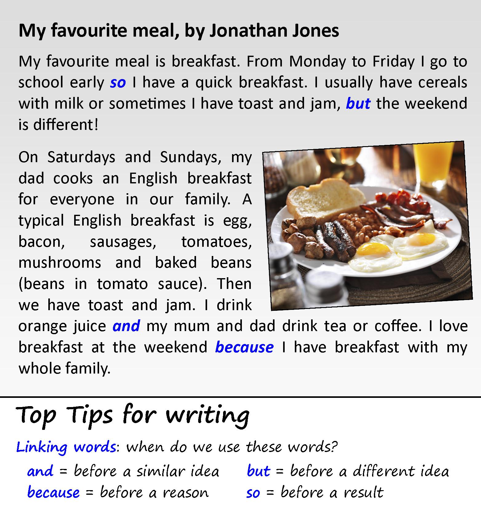

Instructions
Do the preparation exercise first. Then do the other exercises.
Preparation
Do this exercise before you start.
Reading

Discussion
What's your favourite meal?
Language level
Personal online tutoring
EnglishScore Tutors is the British Council’s one-to-one tutoring platform for 13- to 17-year-olds.

Comments